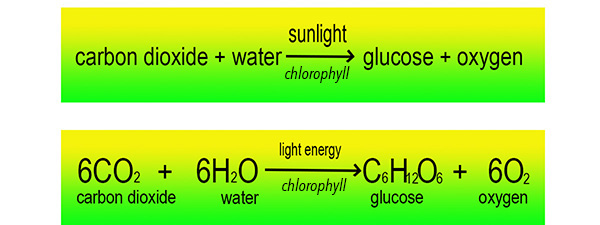

Photosynthesis is important! As I'm sure you know, people and other animals need oxygen to live. Without oxygen, we're all in trouble! How do we get oxygen? A major source of oxygen comes from plants. Oxygen molecules (O2) are made during the process of photosynthesis, which occurs in plants.
But what is Photosynthesis? Unlike animals, plants can make their own food (sugars). The process by which food (sugar) is made in plants is called photosynthesis.
Let’s break the word down into its Latin roots:
So, photosynthesis means to "put together by light." In photosynthesis, sugar is made by light.
(Click the forward arrow to continue...)Photosynthesis is a chemical process. During photosynthesis, sunlight is a major source of energy for the atoms in carbon dioxide (CO2) and water (H2O) molecules to combine (synthesize) to make sugar molecules. Oxygen molecules (O2) are also made during photosynthesis.
The sugars produced are used by plants as their food to help do things like grow and repair damage in cells.
Photosynthesis is a very complicated process. In this unit, we will simplify it and discuss the main steps involved. The chemical equation below shows a simplified summary of the process of photosynthesis: CO2 and H2O are eventually converted into glucose (and other sugars) and oxygen.
Simplified Summary of Photosynthesis:
As a reminder, in photosynthesis, carbon dioxide and water are converted into glucose and oxygen:
Steps of Photosynthesis. To make sugars, plants need sunlight, water and carbon dioxide (and a bunch of other things we won't worry about now). Let’s learn some important steps of photosynthesis:

Two different ways of representing a glucose molecule are shown below.
What are plants made of? (Hint: Think about what plants use in photosynthesis.)


***Note for Teachers: You can access more information about this website and find other resources for science inquiry on the ISP Tutor website.
©2021 Klahr Lab, Carnegie Mellon University. All Rights Reserved
Carnegie Mellon University | Dept. of Psychology | 5000 Forbes Ave. | Pittsburgh, PA 15213 The TED project was funded in part by the Institute of Education Science (IES), Grant R305H060034, and in part by the National Science Foundation, Grant SBE035442. The ISP Tutor project is funded by IES, Grant R305A170176.
The research reported here was supported by the Institute of Education Sciences, U.S. Department of Education, through Grant R305A170176 to Carnegie Mellon University. The opinions expressed are those of the authors and do not represent views of the Institute or the U.S. Department of Education.